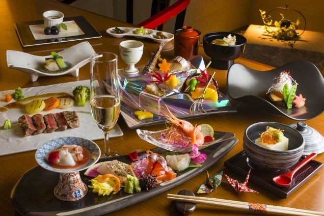
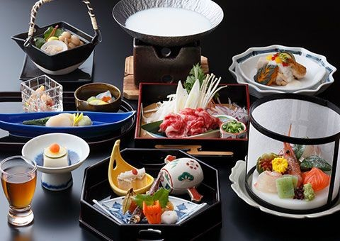
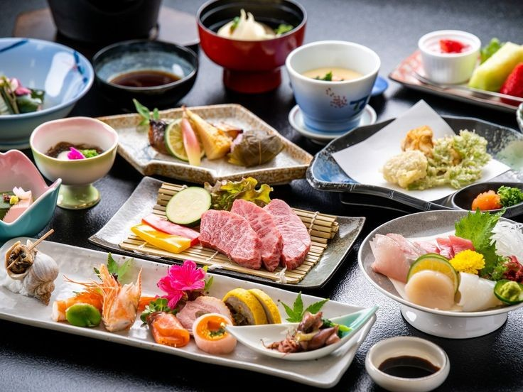
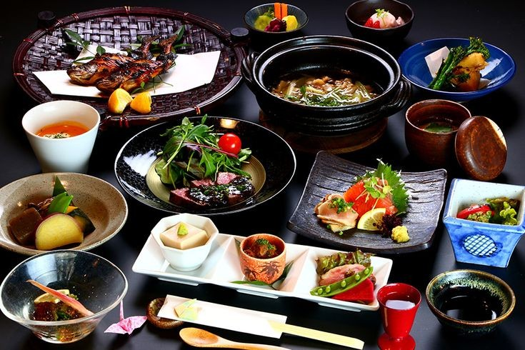

川灯（かわあかり）会席
旬の食材をふんだんに使用し、季節の恵みを味わう基本コース
[ メニュー ]
〇 先付：季節の前菜盛り合わせ
〇 お椀：出汁香る清まし椀 ～旬の魚と彩り野菜～
〇 造里：地元産の新鮮なお造り三種盛り
〇 焼物：炭火焼きの地魚 ～柚子味噌添え～
〇 煮物：季節野菜と湯葉の炊き合わせ
〇 強肴：和牛の朴葉焼き ～特製味噌ダレ～
〇 食事：釜炊き白米・香の物・赤出汁
〇 甘味：手作り和菓子と抹茶
※予告なくメニュー内容が変更される場合がございます。予めご了承下さい。
|

|
清流（せいりゅう）会席
川魚や山菜を中心に、自然の恵みを存分に味わえるコース
[ メニュー ]
〇 先付：ほろ苦い山菜のお浸し ～胡麻風味～
〇 お椀：川魚のつみれ汁 ～柚子の香り～
〇 造里：清流育ちの鮎の洗いと湯引き鯉
〇 焼物：鮎の塩焼き ～炭火焼き仕立て～
〇 煮物：地元野菜と岩魚の煮びたし
〇 強肴：猪肉の陶板焼き ～特製山椒ダレ～
〇 食事：雑穀ご飯・香の物・田舎味噌汁
〇 甘味：ほうじ茶のわらび餅
※予告なくメニュー内容が変更される場合がございます。予めご了承下さい。
|

|
翠葉（すいば）会席
旬の野菜と伝統の技が織りなす、心と身体に優しい料理が味わえるコース
[ メニュー ]
〇 先付：胡麻豆腐 ～山葵醤油仕立て～
〇 お椀：湯葉と椎茸の澄まし椀
〇 造里：湯葉と季節野菜の生麩田楽
〇 焼物：茄子の田楽 ～自家製味噌～
〇 煮物：かぼちゃと里芋の炊き合わせ
〇 強肴：豆腐の精進揚げ ～抹茶塩添え～
〇 食事：炊き込みご飯・漬物・けんちん汁
〇 甘味：甘酒プリン
※予告なくメニュー内容が変更される場合がございます。予めご了承下さい。
|

|
宵月（よいづき）会席
和牛や海の幸、地元の高級食材を贅沢に使った、特別な日にふさわしい贅沢コース
[ メニュー ]
〇 先付：季節の彩り八寸盛り
〇 お椀：香り豊かな松茸の土瓶蒸し
〇 造里：本鮪・雲丹・甘エビなど豪華お造り五種盛り
〇 焼物：特選和牛の溶岩焼き ～山葵醤油または柚子塩～
〇 煮物：のどぐろの煮付け ～上品な甘辛仕立て～
〇 強肴：蟹の酢の物 ～特製土佐酢～
〇 食事：土鍋炊き鯛めし・香の物・赤出汁
〇 甘味：季節の果物と和三盆のアイス
※予告なくメニュー内容が変更される場合がございます。予めご了承下さい。
|

|